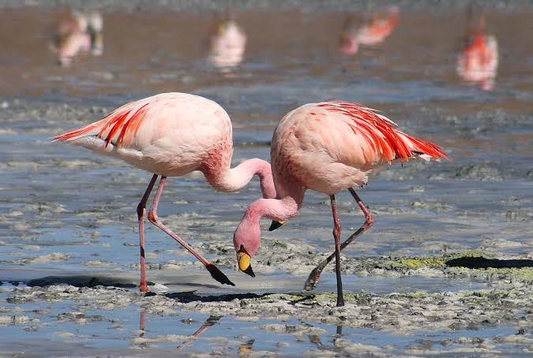

Greater Flamingo
Birds
The greater flamingo is the most widespread and largest species of the flamingo family. It is found in Africa, on the Indian subcontinent, in the Middle East, and in southern Europe.
Height: 1.1 – 1.5 m (Adult)
Scientific name: Phoenicopterus roseus
Mass: 2 – 4 kg (Adult)
Order: Phoenicopteriformes
Class: Aves
Family: Phoenicopteridae
The greater flamingo (Phoenicopterus roseus) is the most widespread and largest species of the flamingo family. It is found in Africa, on the Indian subcontinent, in the Middle East, and in southern Europe.
Out of the worlds six species of flamingo, Greater flamingos are the most widespread and common member of the flamingo family. Greater flamingos have an attractive coloration and appearance.
Their feathers are pinkish/white, the wing coverts are red and the primary and secondary flight feathers are black. They have long pink bills with a black tip, yellow eyes and long pink legs.
The male is bigger than the female, and juveniles have a gray-brown coloration, with some pink on their underparts, tail and wings, with the legs and beak being mainly brown.
Biology of Greater Flamingo
Taxonomy
The greater flamingo was described by Peter Simon Pallas in 1811. It was previously thought to be the same species as the American flamingo (Phoenicopterus ruber),
but because of coloring differences of its head, neck, body, and bill, the two flamingos are now most commonly considered separate species. The greater flamingo has no subspecies.
Ecology
The greater flamingo resides in mudflats and shallow coastal lagoons with salt water. Using its feet, the bird stirs up the mud, then sucks water through its bill and filters out small shrimp, seeds, blue-green algae, microscopic organisms, and mollusks.
The greater flamingo feeds with its head down, and its upper jaw is movable and not rigidly fixed to its skull.
Like all flamingos, this species lays a single chalky-white egg on a mud mound.
Lifespan
The typical lifespan in captivity, according to Basel Zoo, is over 60 years.[10] In the wild, the average lifespan is 30 - 40 years.